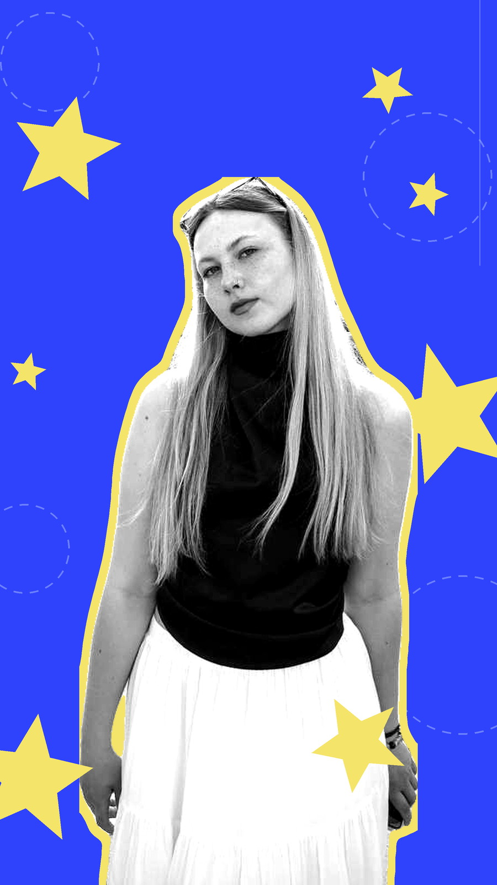

ABOUT
I produce things that put people in a room together. Concerts, festivals, a film, a platform — the format changes, the job doesn't: find the people worth hearing, then build the conditions where they actually get heard.
Most of my work happens in Kazan and across the regions around it. Regional and indigenous music scenes here usually get described from the outside and in the past tense. I'm interested in them as they are — changing, arguing with themselves, alive.
Film and media are the same instinct pointed at a different tool. Production is the part I like most: riders, negotiations, soundchecks, the unglamorous scaffolding that decides whether anything reaches an audience at all.
A culture is an organism, not an exhibit.
- Russian — native
- English — C1
- Spanish — A2
- Based in Kazan, Tatarstan